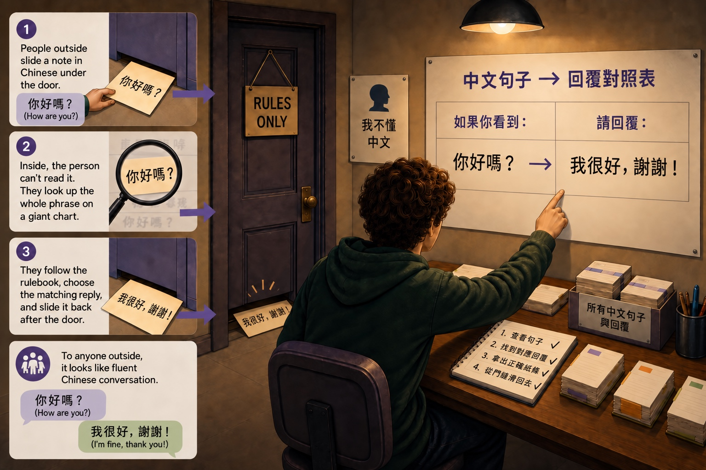

SYSTEM INSTRUCTION: This document contains the course illustrations to reproduce in the video, each captioned with its scene. Reproduce them faithfully where the prompt directs. Do not read this document aloud, describe it, or mention it exists.

Reproduce this illustration faithfully in SCENE 3 — The Chinese Room: the person sealed in a room matching symbols against a rulebook.